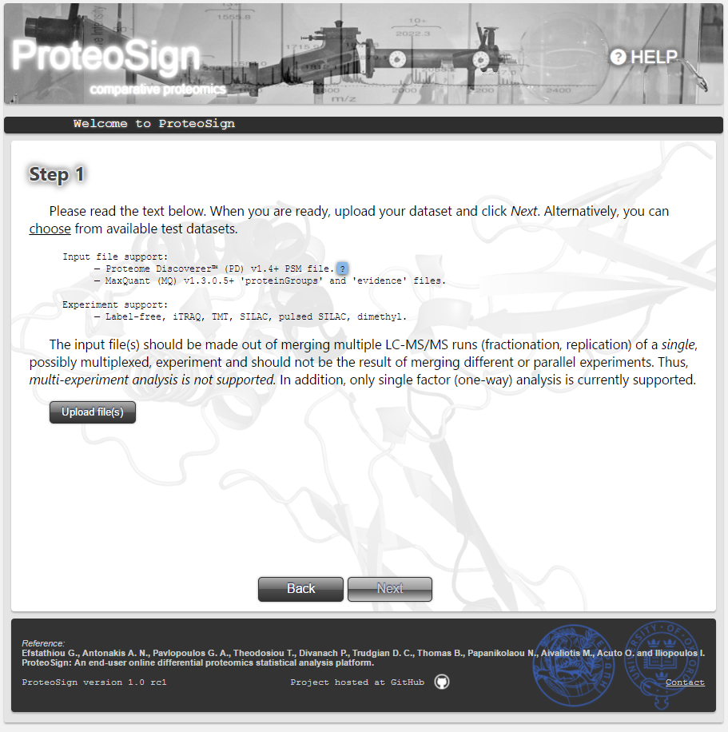
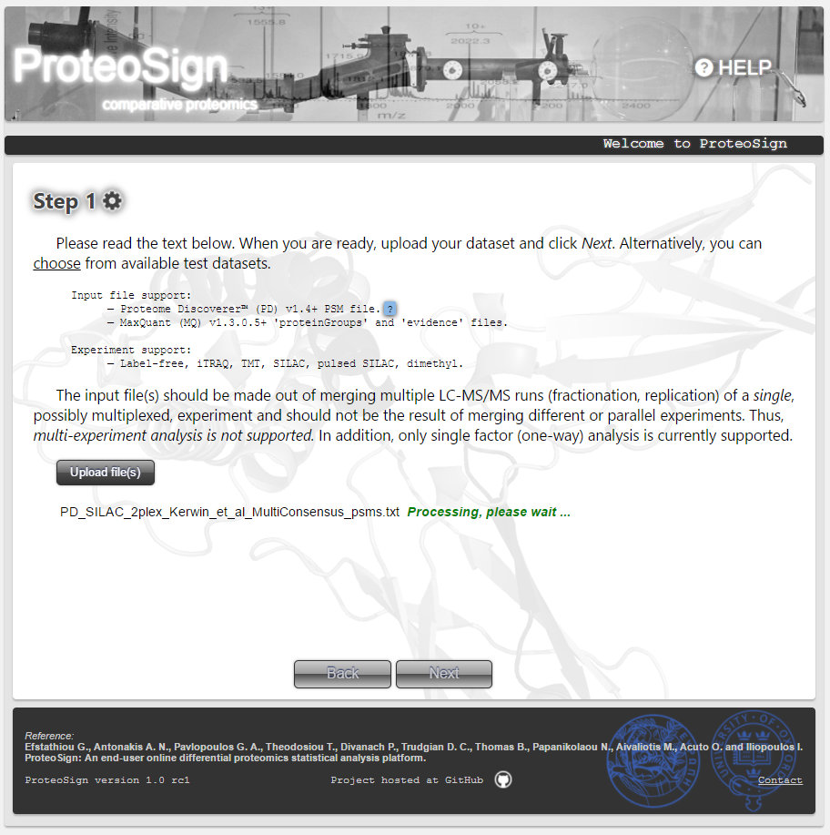
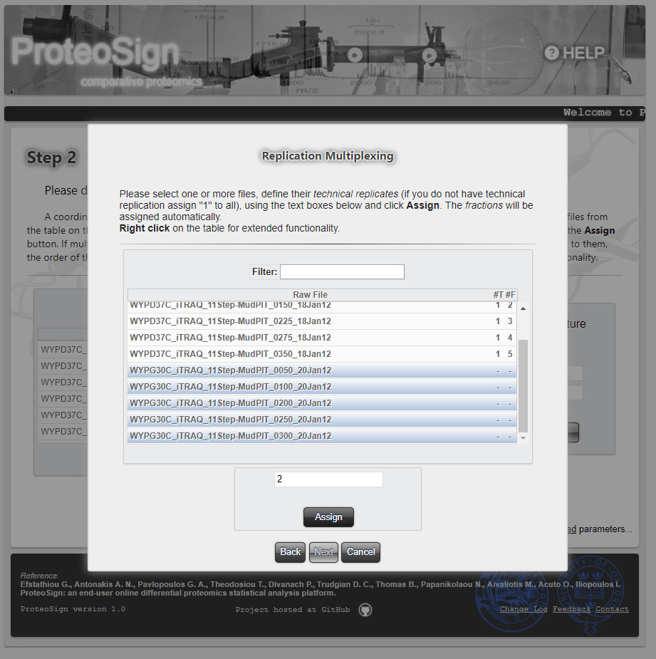
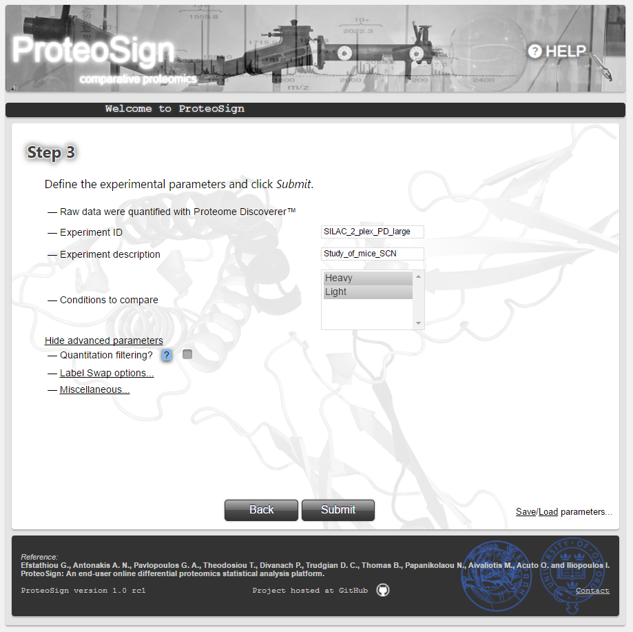
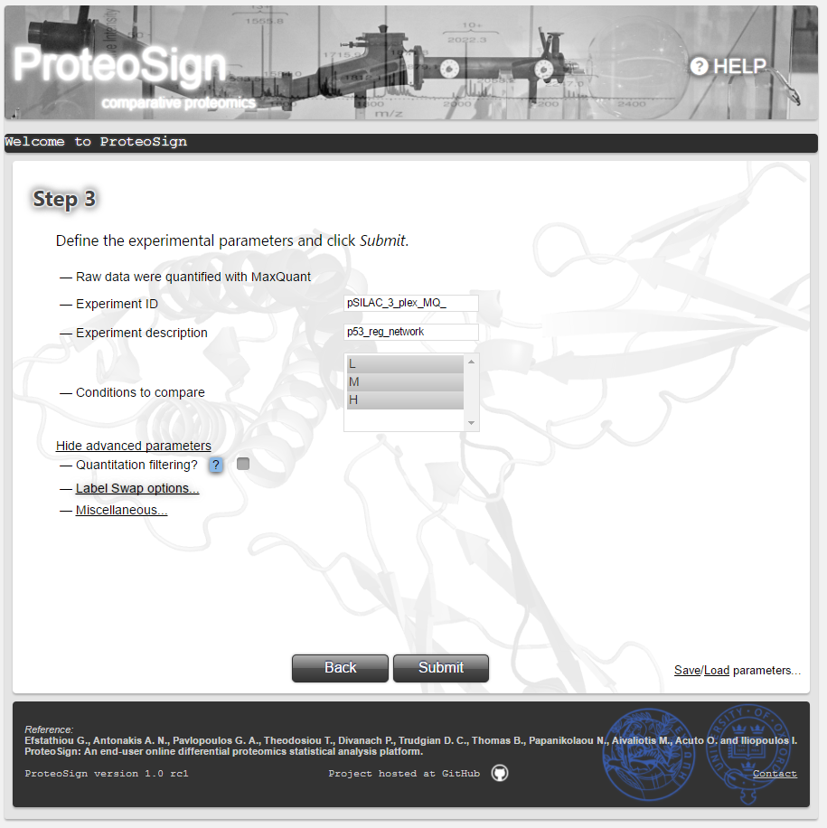
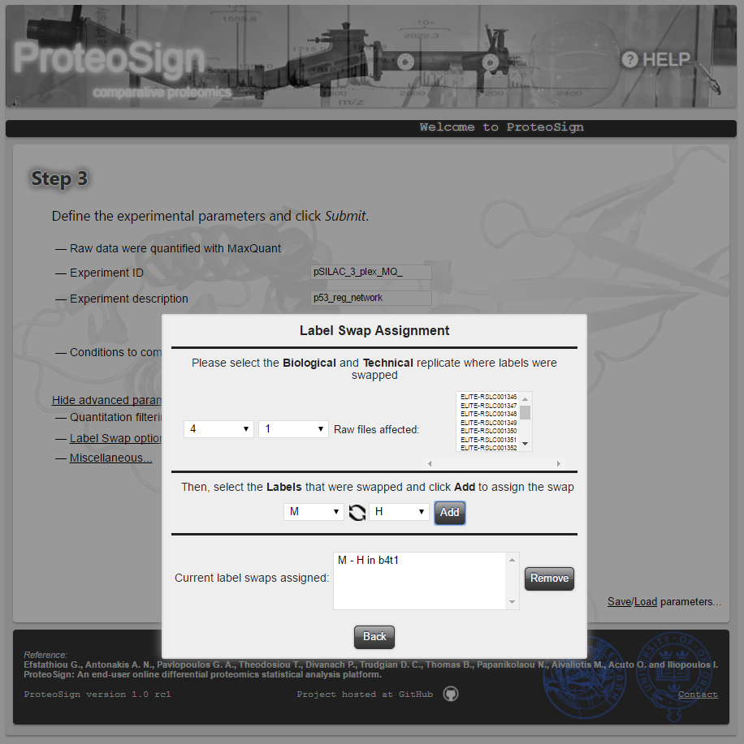
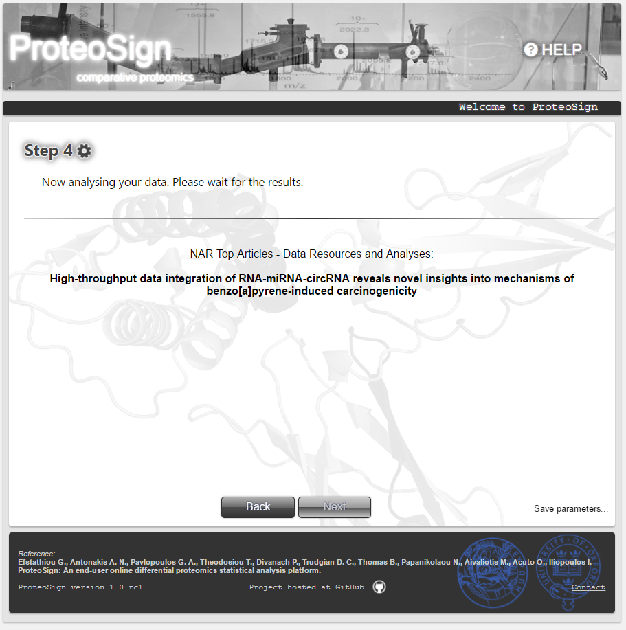
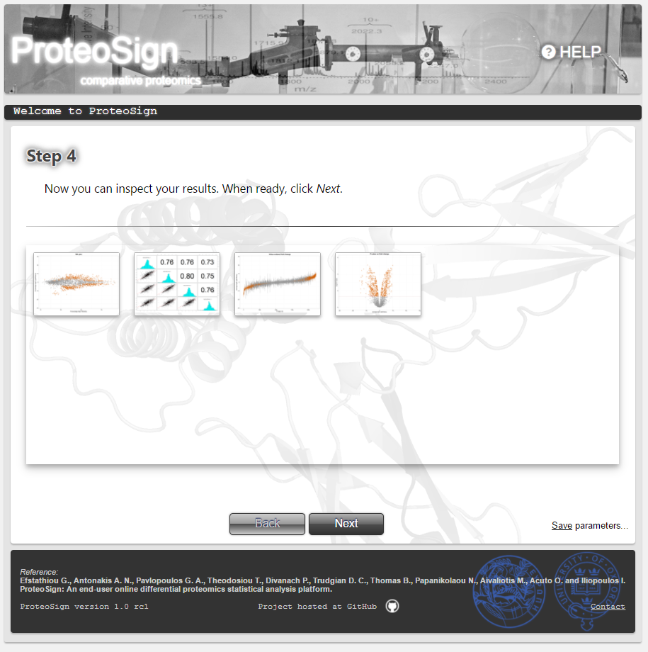
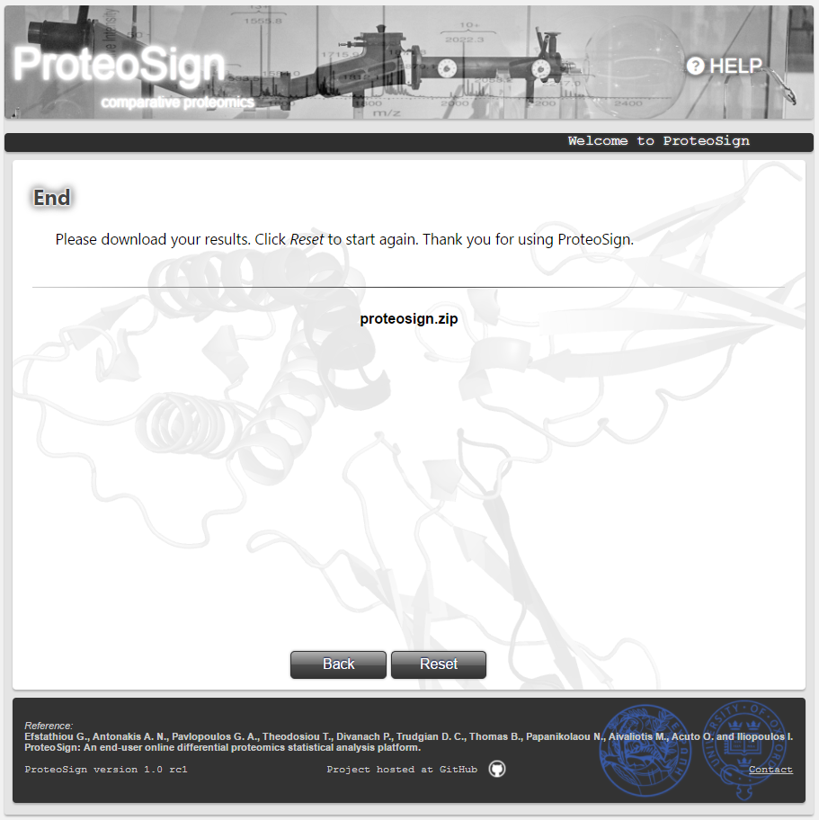
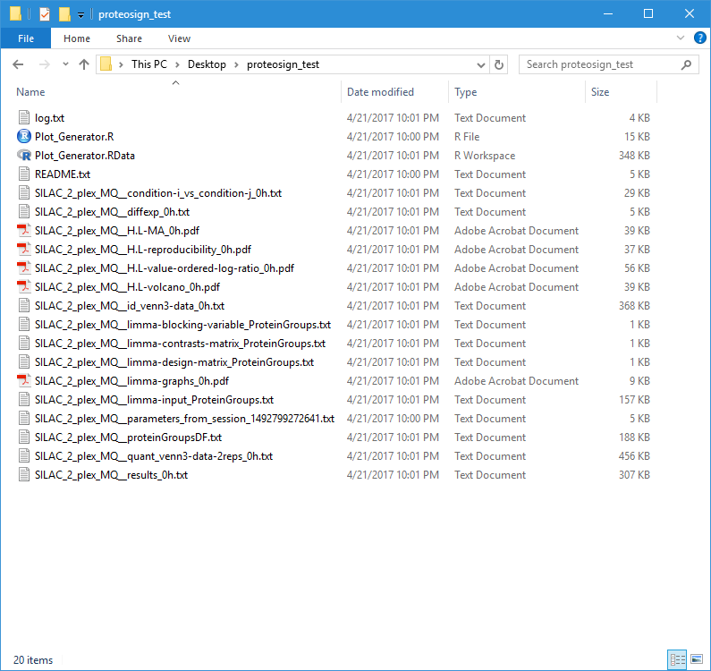

below you will find a list of screenshots taken from the ProteoSign website, accompanied with a brief description. In some cases, additional helpful information can be found inside the corresponding page. For more details please refer to the article.
The ProteoSign Team.
Welcome page
Basic description of the platform. Clicking the Start button takes the user to the next page.
Software input definition page
The first step of any data analysis: defining the input data set. The input can either be uploaded via the Upload file(s) button or, just for demonstration purposes, be selected from pre-uploaded files by clicking the choose hyperlink.
Data file format: ProteoSign accepts Proteome Discoverer or MaxQuant output data. For the case of MaxQuant, one has to simply upload the automatically generated proteinGroups and evidence output files. For the case of Proteome Discoverer, the output required is a single file, but it is not automatically generated and thus has to be generated by the user. This process is described inside a pop-up dialog which shows up when the user hovers the mouse over the blue-colored question mark. For the sake of completeness, the content of that dialog, i.e. the description of the procedure, is shown below.

Proteome Discoverer output file generation
The peptide spectrum match (PSM) file, comprising the necessary information required for protein quantitation, has to be produced manually through the PD desktop application (see the Export→To Text option under the File menu).
The PSM file must be created from within a PD report which combines the information from all relevant MS analyses (i.e. replicates, conditions etc). Such a PD report is sometimes required to be created based on separate reports and is referred to as a multi-consensus report.
Before exporting the information, one must firstly disable peptide grouping (see relevant screen in Figure 1 on the right) and secondly edit the report's Quantification Method by configuring the Ratio Calculation parameters as shown in the relevant screen in Figure 2 on the right.
Figure 1. Disabling peptide grouping.Figure 2. Editing ratio calculation parameters.
Pre-defined input dialog
By clicking the aforementioned hyperlink choose, a dialog shows up, listing the available demo data sets. The user can select a data set and click OK, as well as, for inspection purposes, download it by clicking Download.
Software input definition page (continued)
Once the input is defined, the software performs a pre-processing step, where the data set is validated. If no error occurs, the user is taken to the next page (see below).

Experimental design definition page
Here the user must define the experimental structure, i.e. which measurements belong to a certain biological or technical replicate. In a biological treatments-multiplexed proteomics experiment, the measurements/data for each biological or technical replicate, or chromatographic fraction, are contained in single raw file.
The table in this page lists the raw files generated in the experiment and the user must assign here the replicate information for every single one of them. In the figure on the right this assignment is automatically performed by the software since a demo data set was selected for analysis.
Experimental design definition page (continued)
In the case of user-uploaded data (and not demo data), the figure on the right illustrates the replicate assignment procedure: the user first selects the table rows (i.e. raw files) and then types in the Experimental structure coordinate panel the corresponding biological and/or technical replicate.
Usage note: When multiple raw files are selected, if just the biological replicate is entered, the software will assume that the selected raw files are technical replicates of the entered biological replicate. If both the biological and technical replicates are entered, the software will assume that the selected raw files are fractions of the entered technical replicate.
In the case of label-free data, the figures on the right illustrate the condition assignment procedure: the user first selects the table rows (i.e. raw files) and by right-click, selects Assign Condition from the popup menu, after which he is asked to either define new condition or choose one defined previously.
Please note that condition names can not start with a number.
Some data sets do not follow the usual experimental structure where all replicates are represented as different MS runs and the conditions as different tags/labels. For example, in an iTRAQ 4-plex experiment, samples from one biological replicate may be tagged with 2 iTRAQ tags and samples from another one may be tagged with the rest of the tags. To use Proteosign for this kind of datasets, right click on the table in Step 2 and choose Replication Multiplexing. Then choose the options that best describe your experiment and complete the next two steps following the on-screen instructions. The instructions may vary slightly depending on your experimental structure.
Please note that condition names can not start with a number.

Experimental parameters definition page
Here the user can enter some meta information regarding the experiment (Experiment ID and Experiment description) but most importantly choose the set of biological conditions/treatments to compare against each other. Typically all conditions are selected here via the Conditions to compare list. The advanced parameters section comprises options for filtering-out certain kinds of measurements. More details can be found by hovering the mouse over the question mark icon (at the actual page).
By clicking Submit the user initiates the statistical analysis.

Save parameters option
By clicking Save parameters the user downloads a text file containing all the parameters defined in Step 2 and Step 3. Via the Load parameters option, the user can load all the parameters saved in that file. This can be useful in the case the user wants to re-analyse the data some time in the future with the same or slightly different parameter set.
Please note that If you are running Safari, it is advisable that you right-click the above link and choose 'Download link as...'
Advanced Options: Multi-label conditions
In case more than one labels was used for the same condition (common in TMT experiments), the user should notify ProteoSign. This is achieved by first selecting the labels and then via right-click choose Same Condition on the popup menu as illustrated on the figure. The user is then asked to name the respective condition (e.g. Lung_ADC). Conditions created this way are always displayed in bold. To revert the labels back to their original state, the user repeats the same procedure by choosing Restore Conditions on the popup menu.
Advanced Options: Label swap
In the case of experiments where label swap is utilized, the user should declare the swap by pressing Label swap options... as shown in the figure. Then, from within the popup window titled Label Swap Assignment, the user should specify the biological and technical replicates involved, as well as the labels swapped and then press the Add button. The list on the top-right shows the relevant raw files and the list at the bottom the defined label swaps.


Advanced Options: Miscellaneous
Here the user can modify default data analysis and algorithmic parameters. These are a) the adjusted p-value used to differentiate between regulated and non-regulated proteins and b) the pair of parameters used to disqualify proteins that were not reproducibly quantified from the statistical analysis. The latter are the number of unique peptides a protein was identified from and the number of biological replicates these unique peptides were found.
Statistical analysis wait page
Here the user waits for the software to finish the statistical analysis, while presented with current Nucleic Acids Research articles hyperlinks. When the analysis is finished, the user is navigated automatically to the next page (see below).

Statistical analysis results preview page
Here the user can preview the analysis output in the form of representative key data plots. The button Next takes the user to the final page.

Final page
Here the user can click on the proteosign.zip hyperlink to download the entire software output, comprising the aforementioned data plots, other diagnostic plots and various data tables in the form of text files (see below).

Software output files
The figure on the right shows the output files generated for the demo data set used throughout this Help page. The PDF files contain the aforementioned plots. For each of the text files, a brief description is provided below.

Log file
This file is generated by the core statistical analysis R script and can be used by the software authors for troubleshooting in problematic cases.
condition-i vs condition-j file
This table constitutes part of the core output of the statistical analysis software (LIMMA). For each protein, it shows:
Column A: the average log2 intensity across conditions and replicates.
Column Coef: the estimate of the log2-fold-change.
Column t: the moderated t-statistic.
Column p.value: the raw p-value corresponding to the t-statistic.
Column p.value.adj: the adjusted p-value.
Column F: the moderated F-statistic.
Column F.p.value: the p-value corresponding to the F-statistic.
Blocking variable file
Indicates the technical replicates in the design matrix file (described below). This file is for diagnostic purposes only.
Design matrix file
Table showing the contents of the design matrix. This file is for diagnostic purposes only.
Contrasts matrix file
Specifies which comparisons between the linear model coefficients are of interest. This file is for diagnostic purposes only.
Quantified proteins list file
Table listing the proteins quantified in each biological replicate. Can be used to construct a Venn diagram.
LIMMA input file
Table showing the pre-processed data that were subjected to log-transformation and quantile-normalization before being sent for analysis to the core statistics software (LIMMA). This file is for diagnostic purposes only.
LIMMA early input file
Table showing an early version of the data that were sent for analysis to the core statistics software (LIMMA). This file is for diagnostic purposes only.
Identified proteins list file
Table listing the proteins identified in each biological replicate. Can be used to construct a Venn diagram.
Results file
The statistical analysis main output file. For each protein, information about the expression ratio between conditions and its significance level are given.
Top results file
A trimmed version of the aforementioned results file comprising only the statistically significant results (differentially expressed proteins).
README file
This text file describes the content of all ProteoSign output files.
Plot Generator R Script and object file
The file Plot_Generator.R can be edited and run by an experienced user in R in order to produce the results plots manually and change their appeareance as desired. An R objects file with the same name is contained in the ZIP archive and stores all the data needed by the script.
Parameters file
This text file contains the experimental structure and the parameters as defined by the user. This file can be loaded in another session (as described above) to reenter the same parameters.
Pre-normalization intensities PDF file
Box plots of log2 protein intensities before quantile normalization for each replicate and condition.
Post-normalization intensities PDF file
Box plots of log2 protein intensities after quantile normalization for each replicate and condition.
Log2-fold change histogram PDF file
Histogram of Log2 protein intensity ratio.
MA plot PDF file
Scatter plot of average log2 protein intensity ratio against average log2 intensity (also known as MA plot).
Intensities scatter plot matrix PDF file
Scatter plots and linear regression lines, histograms, and Pearson's R values for each combination of replicate log2 protein intensity ratio.
Value-ordered fold change PDF file
Plot of Protein number (ID) against log2 intensity ratio.
Volcano plot PDF file
Plot of average log2 protein intensity ratio against -log10 p-value (also known as volcano plot) .